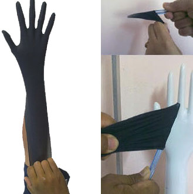
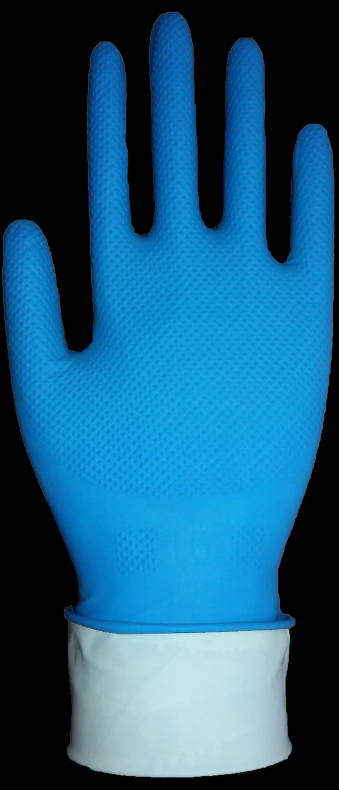

Product Information and Details
Different gloves are made using different materials and resources. Feel free to study how Innovative Gloves produces the finest gloves available in the market, along with the specifications, details and shipping options for each product.
- Diamond Textured Nitrile
- Unbreakable Nitrile
- High Risk Line
- Nitrile
- Powder Free Latex
- Powdered Latex
-
Diamond Textured Nitrile
Features:
- Ambidextrous, Unbreakable Ultimate Grip, Raised-Textured Nitrile Gloves available in Sizes S, M, L, XL and XXL
- Designed for Flip -in Donning and Easy Doffing (Doffing Aided Gloves)
- Powder-free
- 100% nitrile
- Zero natural latex proteins
- Oil resistant
- Abrasion resistant
- Can be tailored to achieve any need or desired performance
- Fully Diamond-textured surface
- High-Visibility
- Available in up to length of 300 mm (i.e. long cuff)
- Greater puncture resistance than latex and vinyl gloves
- Reduced levels of chemical accelerators
- Little to no odour
- Better dissipation of electrostatic charge
- Especially resistant to hydrocarbon oils, fats and solvents
- Enhanced rubber-like feelAdditional Qualities:
- Skin-friendly:
Gloves are washed multiple times during the production process with hot and cold water for excellent donning comfort and no skin irritation/sensitization, even during prolonged and extensive donning
- Weather-tested:
The heavy duty Raised-textured are block-tested under extreme weather conditions at 0C 24 hours continuous exposure and subjected to heat at 1000C for 24 hours.
- Weather-tested:
The heavy duty Raised-textured are block-tested under extreme weather conditions at 0C 24 hours continuous exposure and subjected to heat at 1000C for 24 hours.
Innovative nitrile gloves are dipped thin for dexterity and comfort and do not afford the high degree of chemical protection that is found in heavier weight gloves that are dipped specifically for chemical use. These gloves do afford a degree of chemical "splash" protection and the above recommendations are meant to be used only as a guide when selecting gloves for any chemical contact use.Fully Diamond-textured surfaceSpecifications:
- Powder-Free Blue Nitrile Gloves - The Affordable Choice for consistency, performance and reliability
- State-of-the-art manufacturing facilities and formulation ensure a tough durable glove, free of objectionable chemical odours and harsh, irritating deodorants
- Stronger than either comparable latex or PVC/vinyl gloves, Blue nitriles offer excellent protection against a wide range of chemicals for splash or intermittent contact
- Textured palms and fingers offer exceptional wet or dry grip
- Available in 9'' and 12'' lengths, in sizes from small to large for a complete range of protection.
- Ambidextrous, Non-Sterile, Beaded cuffHover Your Mouse To Zoom
Applications:
- Rigourous Use
- Agricultural
- Food-handling
- General PurposePackaging:
- 10 Pieces Per Dispenser Box
- 24 Pieces Per Dispenser Box
- 50 Pieces Per Dispenser Box
- 100 Pieces Per Dispenser BoxUnbreakable Nitrile


High Risk Line
Features:
- Long 300 mm cuff is longer than a standard glove (230mm), provides protection to wrists and arms
- Palm textured surface to provide excellent grip and ease of working
- Excellent protection in high risk situation and chemical permeation
- Powder free for reduce contaminations and allergic reaction on skin
- Blue color (this can be changed as per customer requirement)
- Very low protein level
- 14.0 Mil and 10.0 Mil thickness far more than normal examination gloves.Application:
These high-risk gloves are extra thick for maximum protection in industrial conditions and infectious environment. An extended cuff offers greater coverage over the wrist and arm. Long cuff avoid roll out in emergency situation. Extra thickness provides durability and protection to fingers and palm.
Controlled chlorination provides excellent donning for easy slip on of such thick gloves in critical situation like trauma, medical waste handling and decontamination. These gloves chlorinated for exceptional grip.Product Conformance:
- ASTM D3578-01
- NFPA 1999: 2008Caution:
- This product contains natural rubber latex which may cause allergic reactions.
- The above information is guideline for the product; it should not be used as product specifications.
For further detailed information please do not hesitate to contact us.Packaging:
- 10 Dispensors per Carton (1 Carton = 500 gloves)
- 50 Pieces Per Dispenser BoxHover Your Mouse To Zoom
Nitrile
Description And Use
Nitrile gloves are made from a synthetic polymer that exhibits rubber-like characteristics when vulcanized. This polymer is made in the form of a latex or emulsion and can be processed in a similar way to natural rubber latex.
While latex gloves continue to dominate the disposable gloves market, increasing incidences of allergies from these gloves have given rise to a need for non-allergic variants, namely nitrile. A property of the latter that makes it unique and distinguishes it from latex is that other than its non-allergic properties, the nitrile polymer allows for additional properties such as resistance to puncture, anti-slip grip, and anti-static and anti-fatigue properties.
The other main difference between natural rubber and nitrile latex is that because natural rubber is a linear polymer it has to undergo a precuring process to enhance its strength before dipping. Nitrile polymers, on the other hand, are inherently cross-linked during manufacture so very little if any precuring is needed to enhance strength. No matter what the ultimate end use, nitrile polymers can be significantly tailored to achieve a variety of needs. When it comes to natural rubber one is essentially limited by nature's creation, with no room for change.Features:
- Zero natural rubber proteins
- Powder-free/powdered
- Greater puncture resistance than latex or vinyl gloves
- Ambidextrous
- Mildly textured surface and 2/3 finger textured for better grip
- Reduced levels of chemical accelerators
- Minimal odour
- Beaded cuff for easier donning
- Better dissipation of electrostatic charge
- Can be tailored to achieve any need / desired performance
- Especially resistant to hydrocarbon oils, fats and solvents
- Enhanced rubber-like feel
Innovative nitrile gloves are dipped thin for dexterity and comfort and do not offer the high degree of chemical protection that is found in heavier weight gloves dipped specifically for chemical use. These gloves do, however, offer a degree of chemical "splash" protection and the above recommendations are meant to be used only as a guide when selecting gloves for any chemical contact use.
Specifications:
- Powder-Free Nitrile Gloves The Affordable Choice for consistency, performance and reliability
- State-of-the-art manufacturing facilities and formulation ensure a tough durable glove, free of objectionable chemical odours and harsh, irritating deodorants
- Stronger than either comparable latex or PVC/vinyl gloves, nitrile gloves offer excellent protection from a wide range of chemicals for splash or intermittent contact
- Textured palms and fingers offer exceptional wet or dry grip
- Available in 9'' and 12'' lengths, in sizes from small to large for a complete range of protection
- Non-Sterile, Ambidextrous, Beaded cuffHover Your Mouse To Zoom
Packaging:
- 10 Pieces Per Dispenser Box
- 24 Pieces Per Dispenser Box
- 50 Pieces Per Dispenser Box
- 100 Pieces Per Dispenser BoxApplication:
- Pure 100% nitrile polymer. Absolutely no natural rubber latex proteins
- Medical grade for top performance
- Economical - outperforms PVC and latex for reduced overall glove consumption
- Rugged - three times more puncture resistant than vinyl or natural rubber gloves of equal thickness
- Comfortable - flexible silky fell eliminates the tiring, constant hand pressure of latex glovesPowder Free Latex
About Our Powder Free Gloves
In order to ensure consistency and promise the highest quality of gloves, Innovative Gloves stresses a very high emphasis on the supply of raw materials. Our latex suppliers are ISO 9002 certified and have been supplying to U.S.A for more that 20 years. (in our previous plants) Highly qualified professionals have designed and analyzed our plant ensuring that there is no contamination of Iron or Copper in any process of the manufacturing process. We have also taken extra precautions by using stainless steel in 90% of our equipments and machines. Our machines are easily configured for double dipping manufacturing processes allowing us to fulfill our customers varying thickness specifications and requirements. Our professionals have designed 48 meters of pre and post leaching to ensure the extractable protein content is barely at non-detectable levels. Powder free latex gloves can either be polymer coated or chlorinated according to specifications.
Description And Use
- The textured finish allows a firm and safe grip while in use
- These gloves are disposable medical grade latex gloves and are therefore designed for one-time use only
- The internal lubrication allows one to easily slip these gloves on and off
- These gloves have good resistance and comfort along with good tactile sensitivitySpecifications:
- Primary material is natural rubber latex in natural white color
- Non-sterile, for single use only
- The textured finish allows a firm and safe grip
- Ambidextrous with beaded cuffPackaging:
- 10 Pieces Per Dispenser Box
- 24 Pieces Per Dispenser Box
- 50 Pieces Per Dispenser Box
- 100 Pieces Per Dispenser BoxFeatures:
- Very good donning properties
- Longer lengths
- Low proteins
- Virtually no smell
- Special hand protection
Check out our services to see how we can help you market your gloves better by providing new colors, sizes etc. by contacting us personally!
Powdered Latex
About Our Powdered Gloves
In order to ensure consistency and promise the highest quality of gloves, Innovative Gloves stresses a very high emphasis on the supply of raw materials. Our latex suppliers are ISO 9002 certified and have been supplying to us for more that 20 years (in our previous plants)
Highly qualified professionals have designed and analyzed our plant ensuring that there is no contamination of Iron or Copper in any process of the manufacturing process. We have also taken extra precautions by using stainless steel in 90% of our equipments and machines.
Our machines are easily configured for double dipping manufacturing processes allowing us to fulfill our customers varying thickness specifications and requirements.The 48 meters of pre and post leaching ensures that the extractable protein content is barely at non-detectable levels.
Our professionals have designed 48 meters of pre and post leaching to ensure the extractable protein content is barely at non-detectable levels. Our powdered gloves have extremely low protein levels when compared to any latex glove available in the market today.
Indirect heating of various ovens ensures consistency in curing these gloves and giving them high tensile and elongation.
Description And Use
- These Gloves are designed with lot of emphasis on the shape to ensure that during a long period of usage they do not cause discomfort
- Moreover, the textured engraving on these gloves gives a firm grip and is beneficial for practically any purpose.Specifications:
- Primary material is natural rubber latex in natural white color
- Ambidextrous with beaded cuff
- Non-sterile, for single use only (disposable)Packaging:
- 10 Pieces Per Dispenser Box
- 24 Pieces Per Dispenser Box
- 50 Pieces Per Dispenser Box
- 100 Pieces Per Dispenser BoxFeatures:
- Smooth and natural feeling
- Low protein contents (less than 100 mg/g).
- These gloves can be produced in various colors, flavors and sizes using food grade pigments and other natural raw materials
Check out our services to see how we can help you market your gloves better by providing new colors, sizes etc. by contacting us personally!